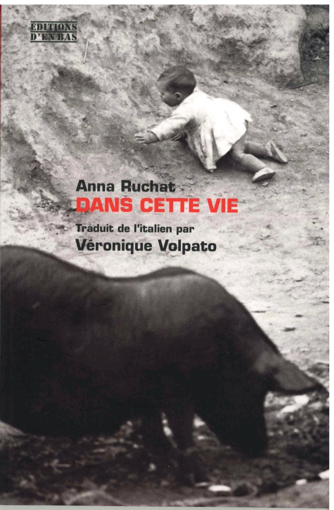
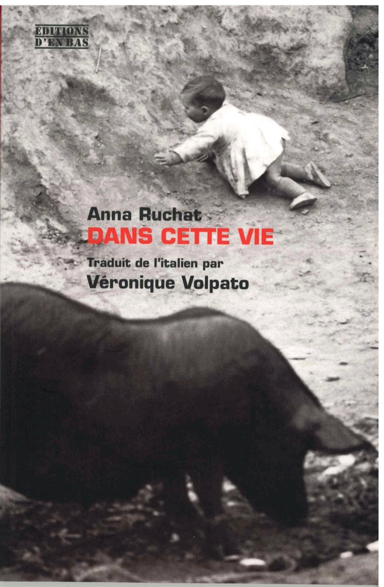

IN QUESTA VITA
"Il libro di Anna Ruchat è di quelli su cui piace compromettersi: dire che ci si è trovati tra le mani alcuni tra i racconti più belli e sorprendenti usciti in Italia (e non solo)."
Silvia De Laude, «Diario»
"Quattro storie (ci scusiamo per l’enfasi) bellissime che rivelano non solo l'attaccamento a una tradizione, ma anche intelligenza innovativa e talento."
Giovanni Pacchiano, «Il Sole 24 Ore»
Vincitore premio Schiller 2005
Vincitore del Superpremio Chiara 2005
 

Quattro racconti sul destino che prima ci asseconda e poi si prende gioco delle nostre vite. La storia di Marta, "trentenne di una bellezza scontrosa e intermittente" che interroga i morti per trovare una via d'uscita. La storia d'amore, scombinata dal vento, tra un sarto affetto da nomadismo e un'austera signora del Nord che, al contrario di lui, detesta gli imprevisti. La storia dei "soldati senz'armi" che se ne vanno lasciandoci in custodia le loro tracce, la loro memoria, per esempio uno scatolone di libri. La storia di Sonia e della sua vita non giocata, piena di segni, angeli, tendine di organza e polvere. Discorsi interrotti, ripresi e intrecciati in un libro malinconico e a volte perfino crudele, come certe ballate di Georges Brassens.
Casagrande, 2004
Die beiden Türen der Welt
Aus dem Italienischen von Franziska Kristen
Vier Erzählungen über das manchmal grausame Spiel des Schicksals mit unserem Leben. Die Geschichte von Marta, einer Dreißigjährigen, und ihrem Kind, das die Geburt nicht überlebt. Die Geschichte der »Soldaten ohne Waffen«, die dem Kampf mit dem Leben unterliegen und von denen nur ein paar Spuren und Erinnerungen zurückbleiben. Die Geschichte der Liebe zwischen einem fahrenden Schneider und Poeten aus dem Süden und einer Redakteurin aus dem Norden. Die Geschichte von Sonia und ihrem unerfüllten Leben, ihrer Einsamkeit zwischen bedeutungsvollen Zeichen, Engeln und Staub.
Rotpunktverlag, 2008
Dans cette vie
Traduit de l'italien par Véronique Volpato
Dans cette vie regroupe quatre nouvelles, quatre récits sur le destin qui guide nos vies et se joue ensuite d’elles. L’histoire de Marta, « trentenaire d’une beauté ombrageuse et intermittente » qui interroge les morts pour trouver une voie de sortie. L’histoire d’amour, bouleversée par le vent, entre un couturier atteint de nomadisme et une dame austère du Nord qui, au contraire de lui, déteste les imprévus. L’histoire de « soldats sans armes » qui s’en vont nous confiant leurs traces, leur mémoire, ou par exemple, un carton de livres. L’histoire de Sonia et de sa vie pleine de signes, d’anges, de rideaux d’organdi poussiéreux. Discours interrompus, repris et entrelacés dans un livre mélancolique et parfois cruel. Le style et le jeu des formes et des perspectives atteint parfois à une grande complexité.
Editions d'en bas, 2014